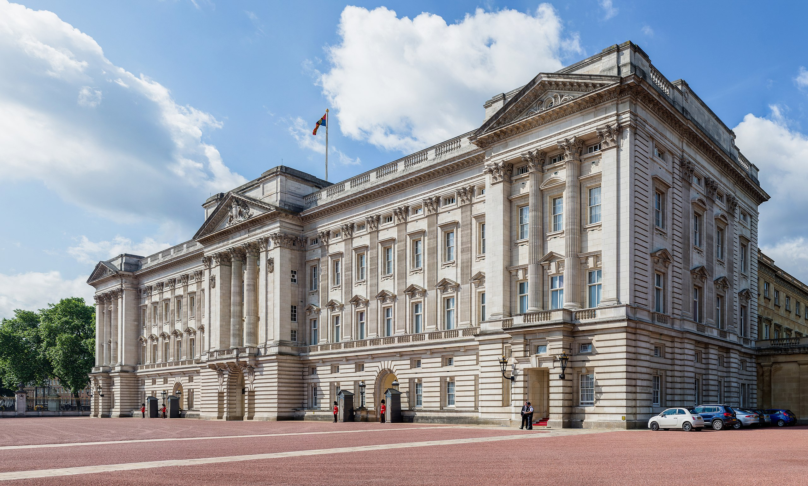
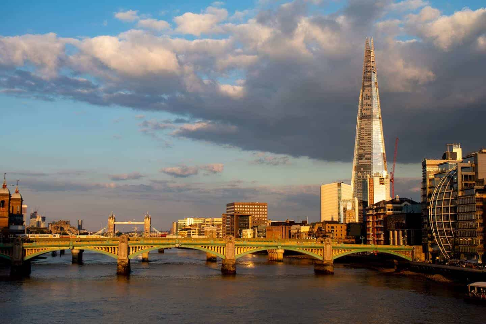
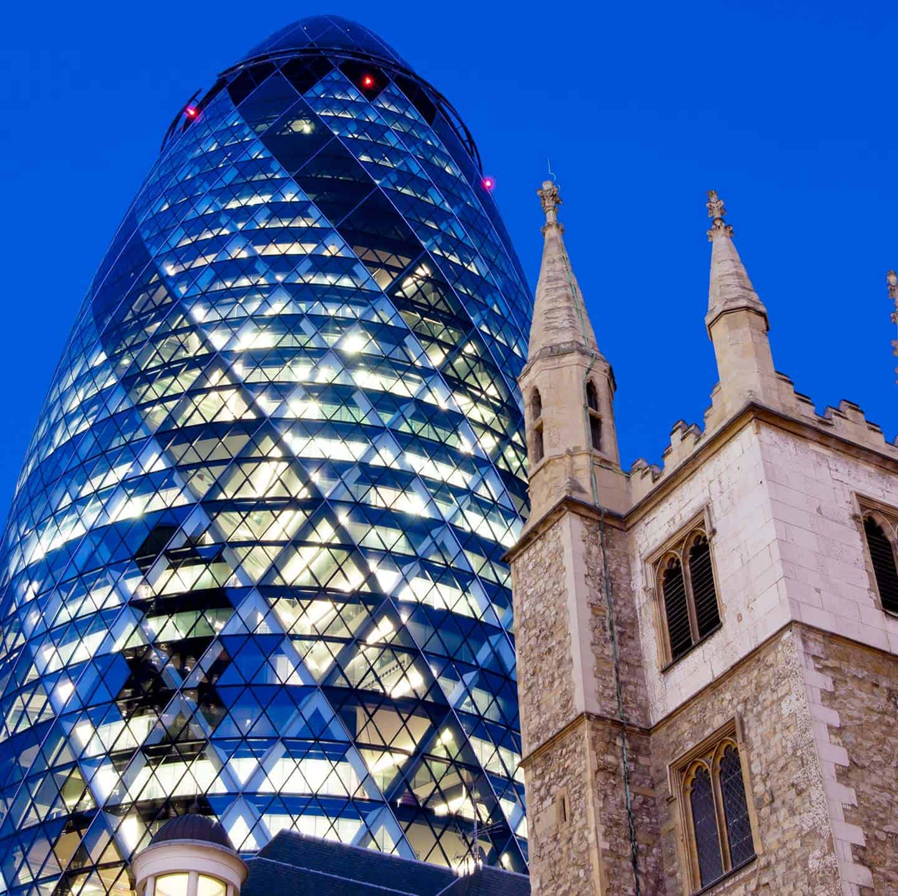
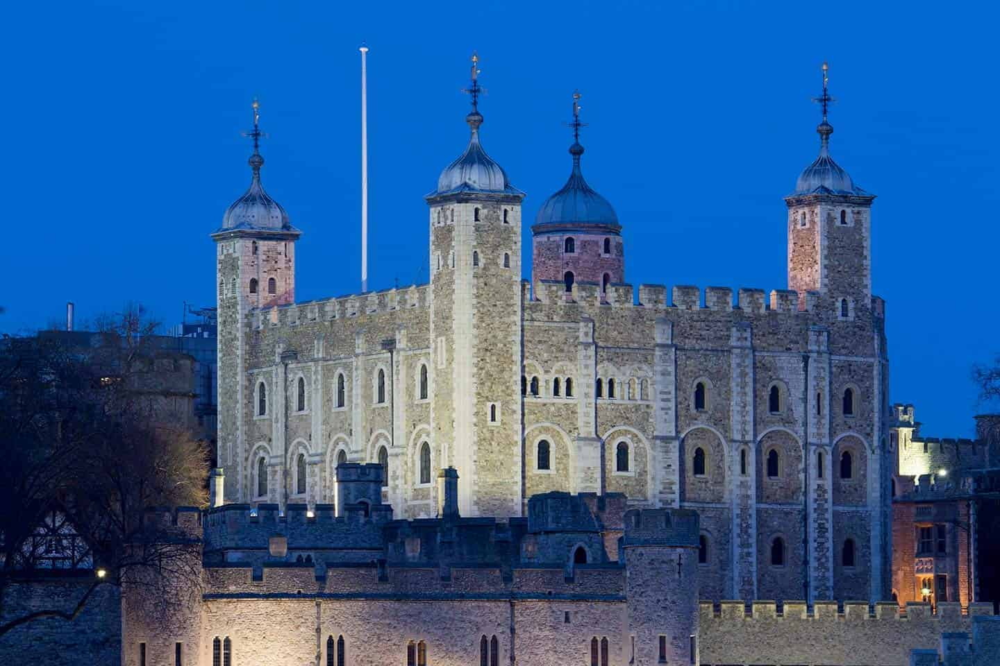

Top Historical Buildings
Buckingham Palace
https://www.rct.uk/visit/buckingham-palaceBuckingham Palace – the official London residence of the Queen – is high on many visitors’ lists of places to go in London. It’s the focal point for state occasions including Trooping the Colour, when regiments of soldiers march in full ceremonial uniform to celebrate the Queen’s birthday. The building stands at the end of the royal processional route, The Mall. It’s also across the road from St James’s Park and Green Park. The State Rooms are open for ten weeks each year (usually July to late September). Otherwise, the closest you can get to it is during the Changing of the Guard ceremonies which are held at 11.00 am four days a week (usually Monday, Wednesday, Friday and Sunday). This ceremony is enormously popular, and one of the top things to do in London, especially for first-time visitors. 1
image © Diliff - Own work, CC BY-SA 3.0, https://commons.wikimedia.org/w/index.php?curid=33269382
The Shard
https://www.the-shard.comRenzo Piano’s super-skyscraper The Shard is by far the tallest building in London, dwarfing everything around it. It’s 1,016 feet (309 metres) high, dominating the area around London Bridge. It houses an office complex, the luxury Shangri-La Hotel and the highest viewing platform in London. You can see the Shard from vantage points all over London, and if you manage to coincide your visit with very clear weather, the View from the Shard is one of the best London main attractions. Watch that weather forecast very closely! 1
image © David Angel, 2021-03-20, https://delveintoeurope.com/famous-buildings-in-london/
The Gherkin
https://www.thegherkinlondon.com30 St Mary Axe was one of the tallest buildings in London when completed in 2004. It quickly became one of the most recognisable icons of London, and remains one of its best-known contemporary buildings.The 180-metre-high structure owes its nickname to its curved upper storeys, which give it the shape of a certain vegetable. It’s best seen up close, rearing up high behind the tower of St Andrew Undershaft church.Since its completion, several other taller skyscrapers have sprung up around it, reducing its impact from a distance. Nonetheless, it’s very much one of the best examples of new London architecture. 1
image © David Angel, 2021-03-20, https://delveintoeurope.com/famous-buildings-in-london/
House of Parliament
https://www.parliament.ukThe Houses of Parliament has seen better days. At present it’s a hotch-potch of scaffolding and sheets holding the magnificent old building together like a set of sticking-plasters.And then there’s Big Ben, the famous clock-tower shorn of all its slender grace by a mass of scaffolding. Big Ben is perennially near the top of any London must see list, especially in the age of digital photography and Instagram. Its glories won’t be hidden away for ever – the restoration work should be finished on the tower by 2021. You can still admire parts of the building that aren’t being restored, including the fine Victoria Tower. It’s part of a UNESCO World Heritage Site along with Westminster Abbey, across Parliament Square. 1

image © David Angel, 2021-03-20, https://delveintoeurope.com/famous-buildings-in-london/
Tower of London
https://www.hrp.org.uk/tower-of-london/The White Tower, the one bona fide castle in London, dates back to the late 11th century. Along with Westminster Abbey, Buckingham Place and St Paul’s, it should be essential for London first time visitors. The Tower served as a fortress and high-profile prison, and now houses an impressive collection of military armour. Look out for St John’s Chapel, one of the most beautiful churches in Britain. The wider complex also houses Britain’s Crown Jewels. If you’re trying to find your way around, ask one of the Yeomen Warders, or Beefeaters, who always wear their iconic uniforms. 1
image © David Angel, 2021-03-20, https://delveintoeurope.com/famous-buildings-in-london/